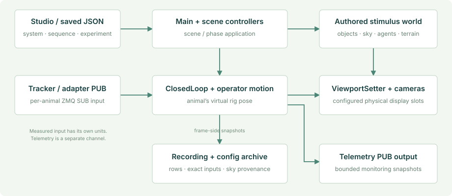

Runtime architecture
The application has one operator/sequence layer, scene-owned experiment controllers and per-animal rigs. Tracking, presentation, monitoring and recording communicate through explicit state; they do not all run on the same worker or share a single ZMQ port.

Schematic of ownership and channel direction, not a timing trace or hardware wiring diagram.
Ownership at a glance
| Owner | Responsibility | Lifetime |
|---|---|---|
MainController |
System config, sequence order, trial/step clocks, scene transition, tracking registration, saved heading references | Persistent across normal scene changes |
MasterDataLogger |
Session directories, exact consumed inputs, trace, writer-drain/archive boundary | Persistent; starts a fresh session from configured setup |
ConfigWorkbench |
Session form, system/sequence/experiment editing, validation and Start | Control/setup only; its panel is destroyed for an experiment |
| Scene controller | Choice objects/design, Swarm, Kannadi, Optomotor or terrain-specific stimulus application | Current scene; compatible controllers can reconfigure in place |
| Rig components | Input reception, measured movement, manual movement, camera mapping and animal pose logging | One configured rig in the experiment scene |
| Night-sky controller | Generated/explicit sky, activation provenance, resource cleanup | Managed stimulus context |
| Telemetry/status UI | Bounded sampled diagnostics, live operator state and errors | Independent of the setup panel and overview |
| ReplayController | Saved-run timeline, evidence resolution, replay views and supported environment/population reconstruction | ReplayScene |
Startup and setup
RuntimePaths selects the configuration and recording roots. In a player it copies missing bundled configuration files into the writable profile. Existing user files are not replaced. In the Editor, defaults remain StreamingAssets and Assets/RunData.
MainController establishes its singleton, ensures that MasterDataLogger exists, reads the system/sequence configuration and registers scene-load handling. The default 0.3 sequence has autoStart: false, so a fresh profile enters the studio. -configure also forces setup. An existing user file can intentionally retain auto-start.
MasterDataLogger captures the system and sequence graph before experiment loggers begin. The studio may then rotate into a fresh configured session when Start is pressed. It saves the selected documents, records their exact sources and metadata, and hands execution to the existing runner.
Scene transition boundary
MainController selects the next execution-order entry. A real scene load runs the new scene's controller, configures its rigs and applies the experiment. RuntimeRigRegistry reconciles the configured VRn identities with the authored rig template before their tracker Start callbacks open inputs.
For a compatible same scene with reloadScene: false, the runner calls IInSceneSequencer.AdvanceStep(parameters). This avoids loading the scene again while still rebuilding/reapplying the condition. It does not mean that all prior trial resources may remain allocated. Population/material cleanup remains the controller's responsibility.
A change of scene or an explicit reloadScene: true follows the full-load path. The scene lifecycle guide explains owned resources and the crash investigation's actual evidence.
Frame-side work and workers
| Execution context | Work |
|---|---|
| Unity frame thread | Scene/rig transforms, stimulus configuration, rendered cameras, immutable snapshot capture and most Unity object creation/destruction |
| Tracker receive worker | SUB socket, payload validation and a locked latest-sample handoff; the worker owns socket disposal |
| Telemetry publisher worker | JSON encoding and outbound PUB operations using the latest bounded pending snapshot |
| Swarm recording worker | Buffered population formatting, gzip and file writes; clean shutdown drains before ZIP creation |
| Replay loading/indexing | Saved evidence parsing/indexing; Unity object application remains in the replay's frame-side flow |
Do not call Unity rendering APIs from an arbitrary socket or file worker. Do not let a network subscriber back-pressure the experiment frame loop. Telemetry can drop snapshots; recordings and their dropped-frame diagnostics have their own contract.
Motion and experimental phases
ClosedLoop consumes the newest complete tracker sample and applies the selected walking or flight interpretation. Keyboard adds permitted operator/autopilot movement. Optional RugosityRig owns height/normal alignment after horizontal movement; MigrationMotion retains its specific wind/AGL role and yields where rugosity owns the pose.
ExperimentPhases manages enabled preStimulus, stimulus and postStimulus conditions in one scene. Phase clocks begin after their configuration/sky setup completes. Heading windows are bounded to the scene or phase duration rather than lengthening the condition. Heading observations use the animal's virtual yaw; raw flight control input is not the measured heading.
Trace one failure
Configuration validation can stop Start before a presentation begins. A missing consumed snapshot makes the archive incomplete. Scene/phase application exceptions enter the runner's error state and report through the status overlay and trace. Telemetry bind/send failures are monitoring failures and do not certify that stimulus execution recovered.
Use runtime_trace.log together with the current phase, config manifest and Unity Player log. A visible error panel records a failure; it is not an automatic experimental validity decision.